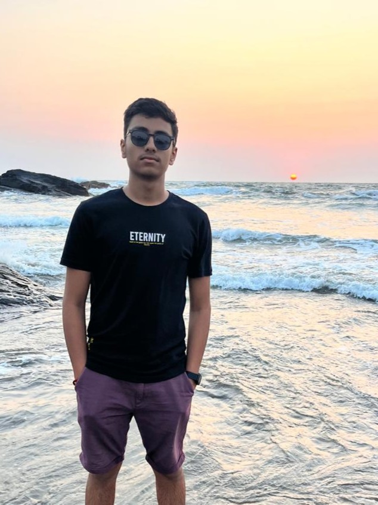

Discovered my passion for programming and digital design. Started experimenting with code, electronics, and creative logic.
Began 3D modeling and UI/UX exploration — blending visual design with technology.
Created advanced apps, web interfaces, and automation prototypes — expanding into full-stack concepts.
Focused on AI-driven experiences and futuristic design — integrating creativity with intelligent systems.